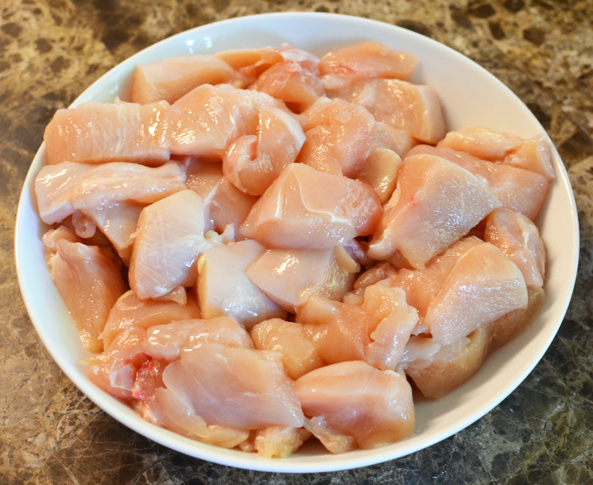
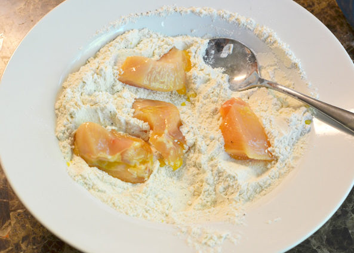
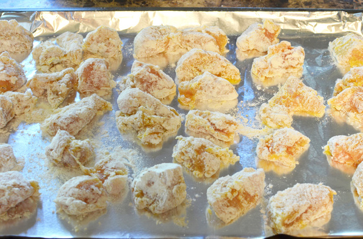
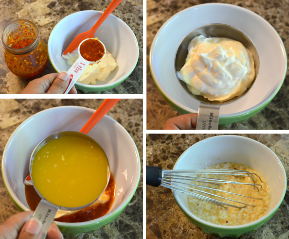
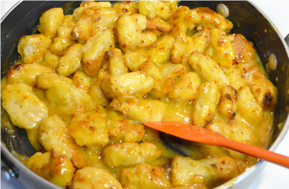
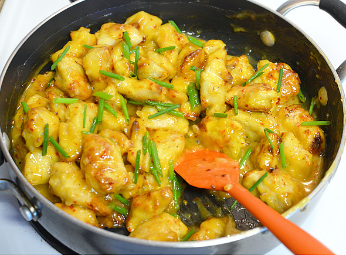
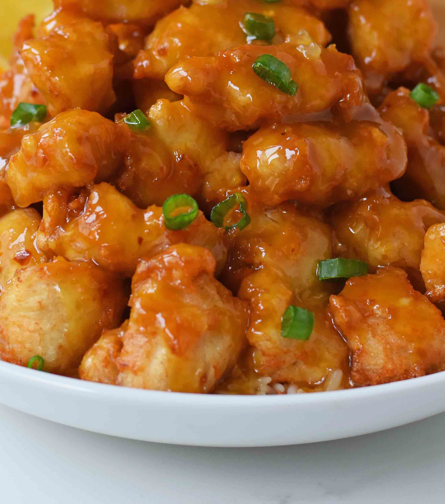

EasyRecipe
Orange Chicken
Prep Time: 15mins | Cook Time: 25mins | Total Time: 40mins
Ingredients
For the Chicken:
- 2 large chicken breasts
- 3 eggs
- 2 tsp garlic salt
- 1/2 tsp hot sauce
- 1 cup of flour
- 1/2 tsp pepper
For the Sauce:
- 1/2 cup of Mayonnaise
- 4-5 tbsp sweet chili sauce
- Zest of half an orange
- 1/2 cup orange juice
- green onions/ chives
Instructions
- Start with boneless skinless chicken breast or thighs. Cut into bite-size pieces. Dredge the chicken in whisked eggs and cornstarch/flour mixture until nicely coated. Get these chicken pieces ready for the oil.



- Make homemade orange sauce. Place orange juice, sugar, vinegar, soy sauce, garlic, ginger, and red chili flakes in a small bowl and mix them well. Add cornstarch and water and stir in orange zest.

- Bake the chicken. At 400F for about 15 minutes and them stick them under the broiler for another 5 minutes to brown them slightly.
- Adding sauce. Once the chicken is slightly browned and cooked through, add it to the simmering sauce. Make all the pieces coat in the sweet sauce. The flour on the chicken will thicken the sauce and also start looking glossier and clearer.

- Decorating with veggies. Turn off the heat once the sauce reaches the desired thickness. Garnish with some fresh chopped green onion/scallions or garlic chives.

Enjoy!
You did it!
